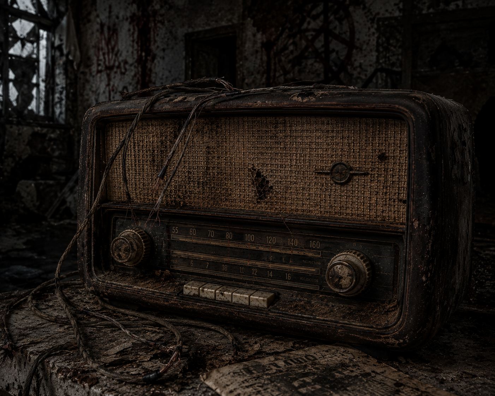
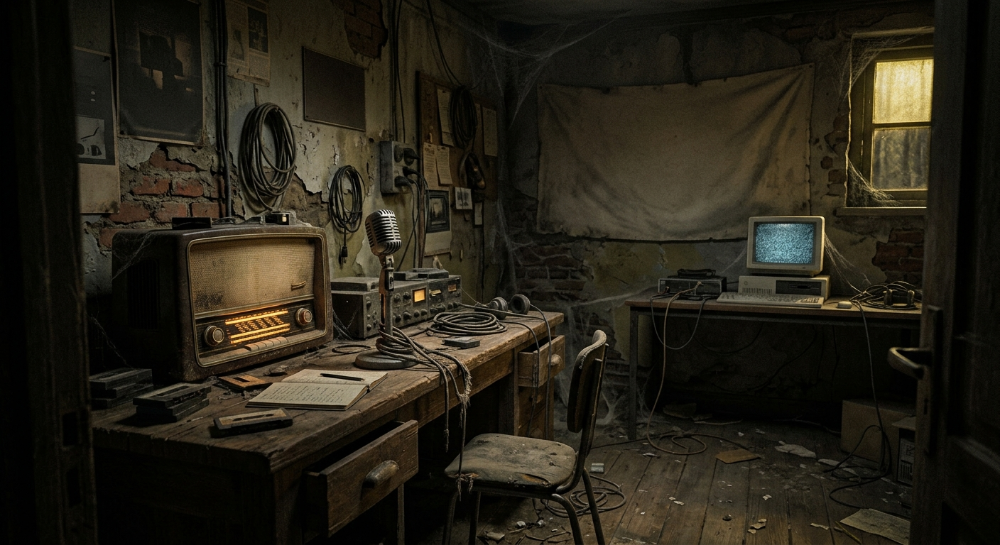

El Último Turno del Locutor
El 31 de octubre de 1985, la señal de radio local se interrumpió de golpe. El locutor principal aseguraba que alguien estaba llamando desde el interior de la cabina, pero los micrófonos solo captaban a un terrorífico eco. Nadie volvió a salir vivo de este estudio.
Hoy en día, los equipos siguen encendidos por la noche. Si prestas atención, puedes escuchar interferencias que deletrean mensajes del más allá.
Normas para Sobrevivir a la Frecuencia
- Mantén la calma ante los ruidos extraños.
- No mires fijamente al dial de la radio analógica.
- Si escuchas tu propio nombre, sal corriendo.
- Sintoniza únicamente la banda permitida.
- No aceptes llamadas en directo de procedencia desconocida.
Sala de Emisión y Pista
Para escapar de esta sala, el ordenador de al lado (desarrollado por 2.º) necesita sintonizar la frecuencia exacta. Usa la siguiente abreviatura para recordar la banda crítica: FM.

Estado actual de los equipos en la mesa:

¿Buscas la pista secreta para el ordenador de 2.º?
La frecuencia exacta que debes introducir en el Slider de JavaFX es: 104.3